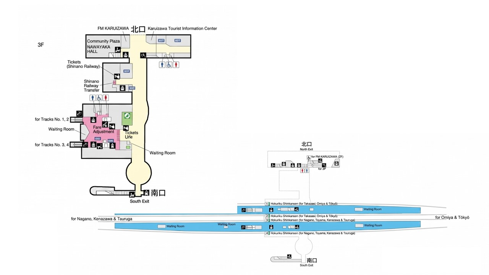

🌸 Julie's 東京獨旅
4/19
4/20
4/21
4/22
4/23
🗺️ 交通
📅 4/22 輕井澤 ➔ 東京

🚆
新幹線購票小卡 (點擊翻轉給櫃檯)
11:17 ➔ 12:20
白鷹 558號 (Hakutaka)
輕井澤 [1或2月台] ➔ 東京 [20月台]
この列車の『乗車券』と『指定席券』をあわせて買いたいです。
(我要同時購買這班車的乘車券及指定席)
🚆 はくたか 558号 (11:17發)
📍 軽井沢 ➔ 東京 (TOKYO)
12:00 ➔ 13:12
淺間 614號 (Asama)
輕井澤 [1或2月台] ➔ 東京 [23月台]
この列車の『乗車券』と『指定席券』をあわせて買いたいです。
(我要同時購買這班車的乘車券及指定席)
🚆 浅間 614号 (12:00發)
📍 軽井沢 ➔ 東京 (TOKYO)
13:00 ➔ 14:12
淺間 616號 (Asama)
輕井澤 [1或2月台] ➔ 東京 [22月台]
この列車の『乗車券』と『指定席券』をあわせて買いたいです。
(我要同時購買這班車的乘車券及指定席)
🚆 浅間 616号 (13:00發)
📍 軽井沢 ➔ 東京 (TOKYO)
13:57 ➔ 15:12
淺間 618號 (Asama)
輕井澤 [1或2月台] ➔ 東京 [20月台]
この列車の『乗車券』と『指定席券』をあわせて買いたいです。
(我要同時購買這班車的乘車券及指定席)
🚆 浅間 618号 (13:57發)
📍 軽井沢 ➔ 東京 (TOKYO)
15:00 ➔ 16:12
淺間 620號 (Asama)
輕井澤 [1或2月台] ➔ 東京 [21月台]
この列車の『乗車券』と『指定席券』をあわせて買いたいです。
(我要同時購買這班車的乘車券及指定席)
🚆 浅間 620号 (15:00發)
📍 軽井沢 ➔ 東京 (TOKYO)
🚉 輕井澤車站導航
🚆 導航至 輕井澤車站
🏨 返回東京住宿：銀座大和飯店
📍 直接導航至飯店
鄰近車站步行導航：
🚶 銀座一丁目站 (有樂町線)
步行 50m / 1分鐘
🚶 京橋站 (銀座線)
步行 350m / 5分鐘
🚶 東銀座站 (日比谷/淺草線)
步行 400m / 6分鐘
🚶 銀座站 (丸之內/日比谷線)
步行 600m / 8分鐘
🚶 東京車站 (丸之內線)
步行 800m / 12分鐘
✍️
Day 4 備註：